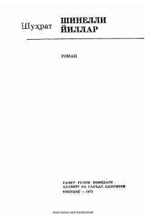

SYIkkinchi jahon urushi davridagi oddiy yigitning qahramonlik va jasoratga to'la hayot yo'li.
Ushbu roman Ikkinchi jahon urushi yillarida oddiy yigit Elmurodning boshidan kechirgan sinovlari va qahramonliklari haqida hikoya qiladi. Asar bosh qahramonning tinch hayotiy orzulari fashistlar hujumi sababli urushga ulanib ketishi va uning jangovar yo'lini yoritadi. Kitobda insoniylik, vatanparvarlik va muhabbat tuyg'ulari urush fonida ta'sirchan ochib berilgan.